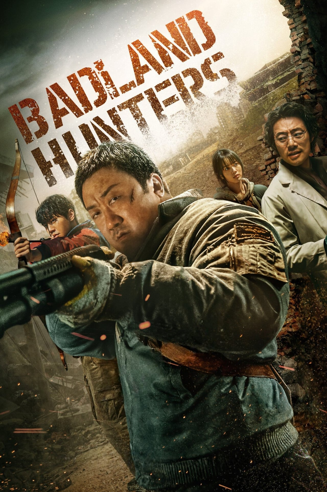
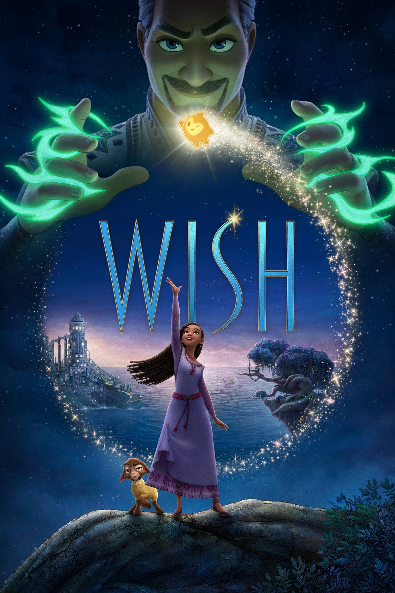

-
60 minutes
7.586An experienced fighter is faced with a crucial choice in his career and personal life. Deciding to forgo a key fight in order to attend his daughter's birthday party, he unexpectedly finds himself in conflict with dangerous men from the world of martial arts. -
Aquaman
8.679The story of half-man, half-Atlantean Arthur Curry, who has to find out whether he is worthy of being what he was destined to be by birth - the king of the underwater world. -

Badland Hunters
7.543When a deadly earthquake turns Seoul into a lawless land, a fearless huntsman rushes to the aid of a girl who has been kidnapped by a mad doctor. -
Beekeeper
5.381The story of a beekeeper's struggle for the survival of his bees and the balance of nature makes us think about what the consequences could be if we do not take care of the world around us. -
Marvel
9.111Superhero movie -
Migration
8.651A family of mallards convinces their overprotective father to go on the vacation of a lifetime as they attempt to migrate from New England through New York and to Jamaica -

Wish
6.841In the kingdom of Rosas, any wish can come true. For this, it is not necessary to keep them for a long time, but to give them to the local king Magnifico. Every wish must come true -
Wonka
7.586Willy Wonka knows better than anyone how delicious chocolate can be. He spent a lot of time studying all the subtleties of cooking. The boy would gladly open a shop, but the old and stingy owners of the local pastry shops stand in his way.